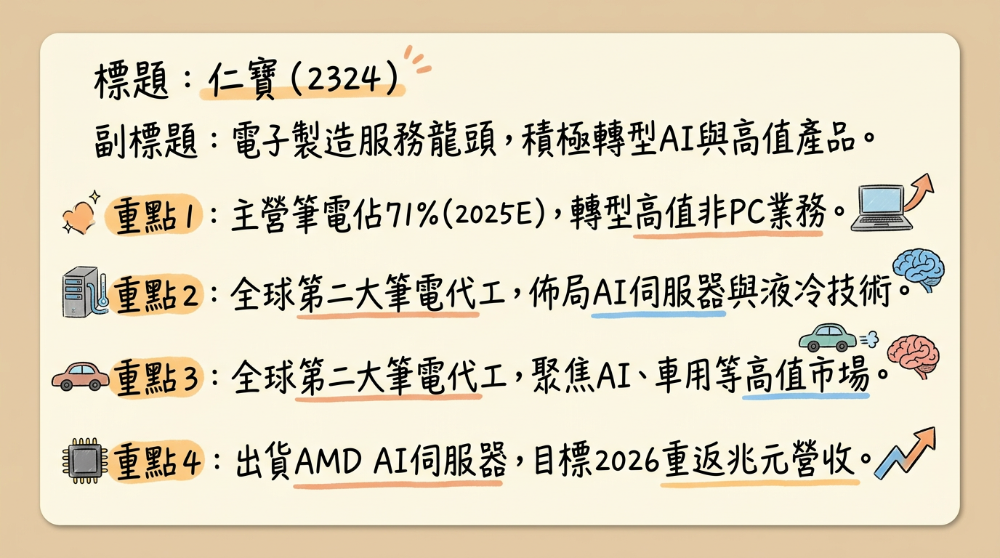
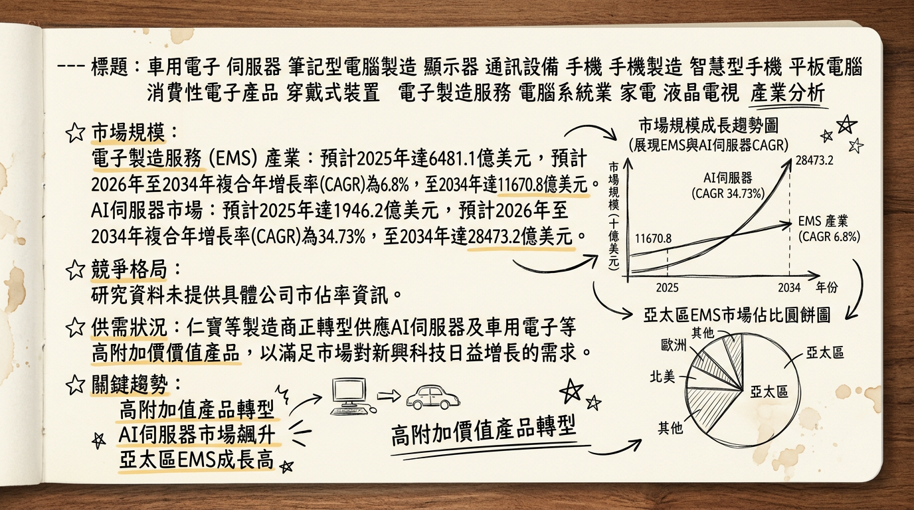
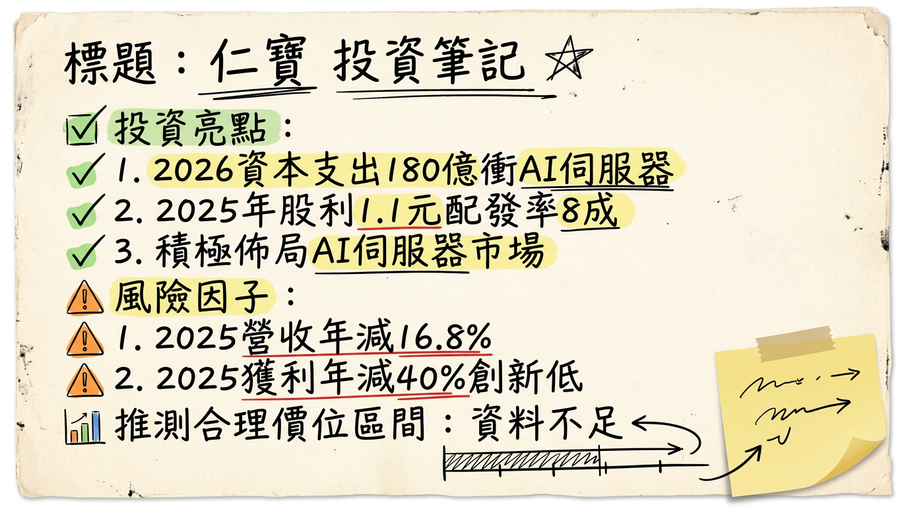

仁寶（2324）正積極透過百億資本支出投入AI伺服器與非PC業務轉型，目標2026年重返兆元營收，擺脫2025年谷底。AI伺服器與AI PC將是主要成長引擎，預期2026年營收與獲利將顯著回升，但傳統PC業務與記憶體成本挑戰仍需關注。
仁寶電腦（2324）成立於1984年，是全球第二大筆記型電腦代工廠。近年來積極轉型，將營運重心從傳統PC業務擴展至高附加價值的AI伺服器、智慧裝置、車用電子、5G通訊、醫療及工業應用等領域，以達成2026年重返兆元營收規模的目標。
核心產品/服務：| 業務類別 | 2025年預估佔比 | 2026年目標佔比 | 2026年伺服器佔總營收目標 | 2026年AI伺服器佔整體伺服器營收目標 | 2027年伺服器佔總營收目標 |
|---|---|---|---|---|---|
| PC業務 | 71% | 60% | N/A | N/A | N/A |
| 非PC業務 | 29% | 40% | >10% | >80% | 20% |
| 月份 | 金額 (新台幣億元) | 月增率 (MoM) | 年增率 (YoY) |
|---|---|---|---|
| 2026年1月 | 593.66 | -10.00% | 7.29% |
| 2025年12月 | 659.64 | 4.76% | 2.98% |
| 2025年11月 | 629.68 | 1.69% | -20.96% |
| 2025年10月 | 619.20 | -11.19% | -27.54% |
| 2025年9月 | 697.20 | 18.55% | -16.77% |
| 2025年8月 | 588.09 | 0.37% | -30.08% |
| 年度 | 合併營收 (新台幣億元) | 營收年增率 | 毛利率 | 營業利益率 | 稅後純益 (新台幣億元) | EPS (新台幣元) |
|---|---|---|---|---|---|---|
| 2024年實際 | 9,126.66 | N/A | 5.0% | 1.6% | N/A | 2.30 |
| 2025年實際 | 7,575.13 | -17.00% | 5.6% | 1.4% | 60.3 | 1.38 |
目前未找到2025-2026年各券商對仁寶的最新目標價、EPS預估及評等調整資訊。
| 券商名稱 | 目標價 (新台幣元) | 評等 | 日期 |
|---|---|---|---|
| N/A | N/A | N/A | N/A |
| 項目 | 2025年全年 | 2025年Q4 | 2025年Q3 | 2025年Q2 | 2025年Q1 | 2024年全年 |
|---|---|---|---|---|---|---|
| 毛利率 | 5.6% | 5.8% | 5.7% | N/A | 5.2% | 5.0% |
| 營業利益率 | 1.4% | 1.4% | 1.43% | N/A | N/A | 1.6% |
| 稅後淨利率 | N/A | N/A | 1.31% | N/A | N/A | N/A |
| 項目 | 2025年Q3 | 2025年Q2 | 2025年Q1 | 2024年Q4 |
|---|---|---|---|---|
| 存貨週轉天數 (天) | 40.59 | 40.88 | 38.96 | 36.4 |
| 應收帳款收現天數 (天) | 78.49 | 84.05 | 86.29 | 81.18 |
| 年度 | 資本支出金額 (新台幣億元) |
|---|---|
| 2026年預計 | 180 |
| 2025年實際 | 82 |
| 2024年實際 | 70 |
* 2024年度：每股現金股利1.2元。
* 2023年度：每股現金股利1.2元。
* 電子製造服務 (EMS) 市場：
* 2025年預計：6481.1億美元
* 2026年預計：6898.6億美元
* 2026-2034年CAGR：6.8%，至2034年達11670.8億美元。
* 亞太地區在2025年佔有44.8%市場份額，預計將以最高CAGR增長。
* AI 伺服器市場：
* 2025年預計：1946.2億美元
* 2026年預計：2622.2億美元
* 2026-2034年CAGR：34.73%，至2034年達28473.2億美元。
* 北美在2025年是AI伺服器市場最大的區域。
* 資料中心液冷市場：
* 2025年預計：48億美元
* 2026年預計：60億美元
* 2026-2035年CAGR：18.2%，至2035年達271億美元。
* 電信 EMS 市場：
* 2025年預計：674億美元
* 2021-2025年CAGR：約8.7%。
* AI伺服器需求強勁： AI伺服器市場呈現指數級增長，雲服務提供商和企業對AI基礎設施的需求不斷升級，表明AI伺服器領域的需求強勁。
* 液冷技術需求激增： 隨著AI工作負載和高效能運算（HPC）的快速增長，對先進液冷技術的需求正在加速，顯示相關散熱解決方案的需求緊俏。
* EMS外包趨勢： 原始設備製造商（OEM）越來越依賴EMS供應商進行可擴展生產，以有效滿足全球需求並降低營運複雜性和成本，表明EMS服務整體需求穩定且有成長。
* 綜合來看，在AI伺服器、相關散熱解決方案及特定高附加價值電子產品領域，需求呈現強勁增長態勢，可能會使得相關供應鏈處於供不應求或供應吃緊的狀態。
電子製造服務（EMS）產業的平均毛利率通常相對較低。仁寶2025年毛利率為5.6%，優於2024年的5.0%。英業達2025年第三季毛利率為5.0%，前三季毛利率為5.3%。這顯示該產業的毛利率普遍在5%左右，且業者正透過自動化、營運優化及成本控管來努力提升毛利率。
| 公司名稱 | 總部 | 主要優勢 |
|---|---|---|
| Foxconn (鴻海精密工業股份有限公司) | 台灣 | 巨大的製造能力，與Apple、Amazon、Microsoft等科技巨頭有長期合作夥伴關係，在自動化和AI驅動製造流程方面取得重大進展。 |
| Wistron Corporation (緯創資通股份有限公司) | 台灣 | 全球領先的EMS/ODM供應商之一。 |
| Jabil Inc. | 美國 | 專注於高價值領域，如醫療保健、汽車和工業設備；投資於增材製造和數位供應鏈解決方案。 |
| Flex Ltd. | 新加坡/美國 | 全球業務佈局，多元的產業專業知識，注重創新。 |
| COMPAL Electronics Inc. (仁寶電腦工業股份有限公司) | 台灣 | 全球第二大筆記型電腦代工廠，正積極轉型至AI伺服器、智慧裝置、車用電子等領域。 |
| Pegatron Corporation (和碩聯合科技股份有限公司) | 台灣 | 消費電子領域的頂級EMS供應商，在IoT設備和電動汽車零部件等新興技術領域擴展能力。 |
| Sanmina Corporation | 美國 | 高複雜產品，在國防和航空航太領域有強大影響力，約有80個生產基地。 |
| 項目 | 仁寶 (2324) | 廣達 (2382) | 緯創 (3231) | 英業達 (2356) |
|---|---|---|---|---|
| 技術 | - AI伺服器：AMD MI350/355X出貨，規劃NVIDIA HGX B300/RTX PRO 6000 Blackwell SX420-2A。<br>- 液冷：與ZutaCore合作開發無水液冷伺服器。<br>- AI PC：預計2026年滲透率達50-60%。 | 被視為AI伺服器領先者之一。 | 積極投入AI伺服器市場。 | - AI伺服器：預計2025年銷售額增60%，佔總收入30-40%。2025Q1開始出貨Nvidia GB200伺服器機架。與AMD合作開發MI350及MI400/450。<br>- 預計2026年AI伺服器出貨量大幅增長。 |
| 產能 | - 2026年資本支出180億新台幣。<br>- 台灣AI實驗室、台灣/越南產線擴充、美國設廠（2026H1完工，2026H2小量生產）以加強AI產品量產。 | 作為主要EMS廠商，通常積極投入產能擴充。 | 作為主要EMS廠商，通常積極投入產能擴充。 | - 2026年資本支出增至10億美元。<br>- 擴大AI伺服器、PC、汽車電子生產能力。在台灣、美國、墨西哥和泰國的新設施預計2026年完工。在美國德州建立AI伺服器設施。 |
| 客戶 | 擴大客戶群，包括雲服務提供商、企業客戶和零售通路。 | 廣泛的全球科技巨頭客戶。 | 廣泛的全球科技巨頭客戶。 | 加強與雲服務提供商（CSP）的關係，二、三線雲端客戶也是新需求來源。 |
| 公司名稱 | 22025年營收 (新台幣億元) | 2025年毛利率 | 2025年EPS (新台幣元) | 備註 |
|---|---|---|---|---|
| 仁寶 (2324) | 7,575.13 | 5.6% | 1.38 | 營收年減17%，毛利率優於2024年的5.0%。 |
| 英業達 (2356) | 5,198.97 (前三季累計) | 5.3% (前三季累計) | 1.85 (前三季累計) | 預計2025年整體業績可望維持成長。 |
| 廣達 (2382) | 未找到最新具體數據 | 未找到最新具體數據 | 未找到最新具體數據 | 預期受AI伺服器帶動，2026年營收仍將保持高位。 |
| 緯創 (3231) | 未找到最新具體數據 | 未找到最新具體數據 | 未找到最新具體數據 | 預期受AI伺服器帶動，2026年營收仍將保持高位。 |
* AI 伺服器與高效能運算 (HPC)：
* 趨勢： AI模型運算密集度更高，推動對高密度、高效率AI伺服器的龐大需求。專用AI處理器（GPU、ASIC）和高頻寬記憶體（HBM）成為主流。
* 影響： EMS廠商需具備設計和製造複雜AI伺服器平台的能力，如支援NVIDIA Blackwell和AMD Instinct系列。
* 液冷技術的普及與熱管理智能化：
* 趨勢： 傳統空冷系統不足以應對高熱負載，液冷技術因卓越熱傳導和高能源效率而成為主流。預計到2026年，液冷AI伺服器將從2024年的15%增加到54%，並在2026年達到76%。
* 影響： EMS廠商需開發整合液冷解決方案的AI伺服器產品，並朝向智慧型基礎設施層發展，實現熱能智慧化管理。
* AI PC 的興起與邊緣AI部署：
* 趨勢： AI功能將內建於幾乎所有設備，AI PC將配備AI增強型處理器和NPU，提供更快的性能和能效。
* 影響： EMS廠商需具備設計和製造AI PC的能力，AI PC滲透率預計在2026年達50-60%，2027年達80%，將提高產品平均售價，支持營收增長。
* 機會：
* AI伺服器業務爆發式增長： 已開始量產出貨，與AMD和NVIDIA合作，預計2026年AI伺服器營收將顯著增長，2027年佔總營收20%。
* AI PC浪潮： 作為主要PC代工廠，可望受益於AI PC的平均售價提升和滲透率增長。
* 非PC業務轉型： 擴展5G、醫療、汽車和工業應用，目標2026年非PC業務比重提升至40%，實現更平衡營收結構。
* 全球產能佈局： 在台灣、越南和美國擴建AI伺服器生產線，滿足全球客戶需求。
* 威脅：
* 市場競爭激烈： AI伺服器領域競爭激烈，廣達、緯創、英業達等同業積極投入。
* 傳統PC業務壓力： 全球關稅政策和市場競爭加劇影響傳統PC業務。
* 技術快速迭代： AI技術發展迅速，需持續投入研發以保持競爭力。
* 供應鏈挑戰： 先進半導體供應鏈限制以及對能源效率更高的AI伺服器的需求構成挑戰。
* AI (人工智慧)： 仁寶是AI伺服器和AI PC的關鍵製造商，產品將整合NVIDIA Blackwell、AMD Instinct等AI晶片。
* HBM (高頻寬記憶體)： 作為AI伺服器製造商，仁寶的產品必然需要整合HBM，其發展和供應直接影響AI伺服器業務。
* 電動車 (EV)： 仁寶擴展至車用電子領域，受益於電動車對電子元件（ECU、BMS）需求增長。
* 液冷技術： 仁寶已推出高密度液冷AI伺服器，並與ZutaCore合作，搶佔AI伺服器散熱關鍵技術。
* 5G 通訊： 仁寶積極佈局5G通訊產品，受益於全球5G基礎設施投資和5G訂閱數增長。
| 時間點 | 成長動能 | 具體內容 |
|---|---|---|
| 2026年Q1 | AI伺服器出貨翻倍 | AI伺服器出貨量預計較2025年Q4倍數成長，訂單能見度已延伸至下半年。 |
| 2026年H1 | 美國新廠建置完成並投產 | 美國新廠（5億美元投資，聚焦L10/L11高階AI伺服器組裝）預計上半年完成建置，下半年小量生產。 |
| 2026年 | 資本支出倍增，擴廠與研發投入 | 總資本支出達180億元（較2025年倍增），其中60億元用於伺服器相關投資（台灣實驗室、台灣/越南產能擴充、美國新廠）。40億元用於台灣總部大樓興建。 |
| 2026年 | 非PC業務比重提升 | 非PC營收佔比目標從2025年的29%提升至40%，持續專注「5+計劃」（伺服器、車用電子、5G、醫療、工業）。 |
| 2026年 | AI伺服器營收貢獻顯著 | 伺服器營收佔總營收目標超過10%，其中AI伺服器貢獻伺服器總營收的80%以上。 |
| 2026年 | AI PC滲透率快速提升 | 預計AI PC滲透率將達到50%至60%，Windows換機潮與企業導入AI PC需求支撐中高階機種動能。 |
| 2026年 | 新客戶與新市場開拓 | 除了既有客戶，積極爭取超大型雲端客戶(CSP)及企業級客戶訂單。規劃進軍NVIDIA下一世代Vera Rubin平台，並與AMD合作開發機櫃級解決方案。與雷虎科技合作開發結合5G、LTE、衛星、RF的全網整合通訊模組，2026年起導入無人載具。 |
| 2027年 | 伺服器營收比重挑戰新高 | 目標伺服器營收佔總營收挑戰達到20%。預期AI PC滲透率上看80%。 |
仁寶正處於關鍵的戰略轉型期，2026年有望成為營運重返成長軌道的關鍵一年。儘管2025年獲利承壓，但高額資本支出和法說會明確的AI伺服器展望，預示著公司將在AI趨勢中捕捉重大機遇。
基於2026年EPS預估區間為NT$1.5至NT$2.18元，考量公司正處於AI轉型的高成長期，且AI伺服器比重提升後可享有較高的估值（若給予P/E Ratio 15-18x），預估合理目標價區間為 NT$25.0 - NT$35.0。
本報告由 AI 自動產生，資料來源為公開網路資訊，僅供參考，不構成投資建議。產生時間：2026-03-06 13:34


